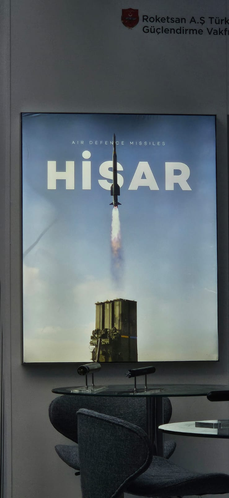
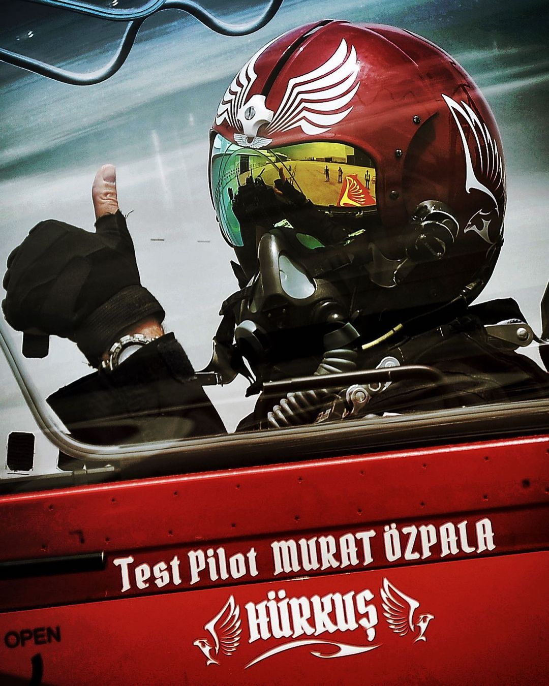

Yazılar
-

AESA RADARI VE MURAD
Türkçe açılımı aktif faz dizilimli radar olan "AESA" radarının eski radarlardan farkı: Eski radarlar sadece tek bant üzerinden belirli bir alana aynı frekansta sürekli sinyaller gönderiyorken AESA radarı; zorlu hava koşullarına dayanarak üzerinde çok sayıdaki alıcı-verici modül sayesinde aynı anda daha geniş bir alana, hepsi farklı frekanslarda sinyaller gönderebilmektedir. Bu sayede elektronik harbe karşı koyarak gizliliğini koruyabilmektedir. Daha uzun menzilli olmasının yanı sıra aynı anda farklı hava ve kara hedeflerini görebilmektedir. Türkiye'nin de halihazırda yürüttüğü 2018 yılında çalışmalarına başlanmış "MURAD" isimli bir radarı vardır. İlk olarak 2021 yılı IDEF'te halka sunulan Murad'ın 2022 yılında Akıncı üzerine takılması hedeflenmekteydi. Hedeflenen zamanlar böyle olsa da uygulanan ambargolar nedeniyle verilen tarihlere tam olarak uyulamadı ama proje gecikmeli de olsa devam etmektedir. MMU için de BÜRFİS isimli ayrı bir AESA radarı geliştirilmektedir. Aynı zamanda deniz ve kara araçları için de geliştirilmekte olan versiyonları mevcuttur. Proje hem ülkemizin dışa bağımlılığını azaltmayı hem de Silahlı Kuvvetlerimizi bir üst kademeye taşımaya hedeflemektedir.
-

UÇUŞTA OKSİJENSİZ KALAN PİLOT
Hürkuş'un dünyada kabul görmesi için güvenilirliğinin kanıtlanması gerekiyordu. Bu nedenle yapılan testlerden biri de havada motor durdurma ve yeniden çalıştırma testiydi. Bu testlerden birinde Hürkuş'un test pilotu Murat Özpala yine motoru durdurdu ancak Hürkuş ekibi, yoğun test maratonunda Özpala'nın havada patlattığı oksijen şişesinin kısıtlı süresi olduğunu unutmuştu. Uçağın motoru durgun vaziyette olduğundan elektrik sistemi de durmuştu ve Özpala, kokpitte oksijensiz kalmıştı. Test pilotumuz, yerden testi takip eden ekibine "Kendimi iyi hissetmiyorum." dediği anda telemetri odasında bir sessizlik oldu. Herkes gökteki Özpala'dan yeni bir mesaj beklemeye başladı. Sonunda o ses geldi, Özpala iyiydi. Kıymetli test pilotumuz, hipoksiyanın (oksijen yetmezliği) eşiğinden dönmüştü. Hürkuş ve pilotumuz sağ salim yere indi. Yoğun tempoda fazladan mesailerle bir rüyayı gerçekleştirmek için çabalayan ekip, dalgınlıkla bir hata yapmıştı ancak Türk Hava Kuvvetlerine yıllarca hizmet etmiş ve test pilotluğu için gönüllü olup yurt dışında özel eğitimler almış Özpala, durumun üstesinden gelmiş ve değerli uçağını yere indirmişti. Kaynak: TUSAŞ Yayınları, Hayalden Gerçeğe

ÖZGE KARABULUT
Mesleğe komiser yardımcısı olarak başlayan ve daha sonra Havacılık Daire Başkanlığının pilotaj sınavında başarı göstererek eğitimlere katılmaya hak kazanan Özge Karabulut, 2019 yılında temel pilotaj eğitimini tamamlamasının ardından 2020 yılında Bell 429 ve 2021 yılında Atak helikopterlerinin intibak eğitimlerini de başarıyla tamamlamıştır.
📍Eğitimlerin ardından dünyada ilk defa bir polis teşkilatının envanterine dahil ettiği taarruz sınıfı helikopterde görev alarak Türkiye Cumhuriyeti’nin ilk kadın taarruz helikopter pilotu sıfatıyla tarihe adını yazdıran Karabulut, gece ve gündüz demeden vatanî görevini yerine getirmiştir.
📍Atatürk’ün “Türk kadını yerlerde sürünmeye değil, omuzlarda yükselmeye layıksın.” sözünü hatırlatan Özge Karabulut, bir Türk kadını olarak beş yıldır bilge gökyüzünün koruyuculuğunu sürdürmektedir.
Uçuş Rekoru Kırdı!
Bayraktar TB3, 32 saat havada kalarak rekor kırdı.
📍13. uçuş testinde dayanım testini gerçekleştirerek 32 saat havada kalan TB3, 5.700 km yol katetti.
📍Bayraktar TB3 yerlilik oranı %98 olan TEI PD170 motorunu kullanıyor.